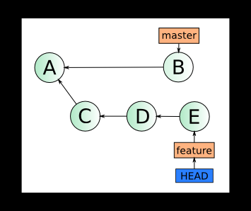
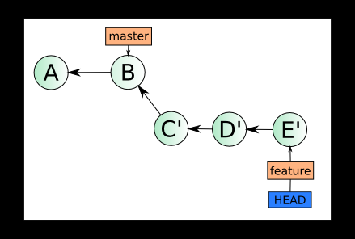
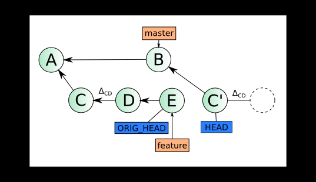
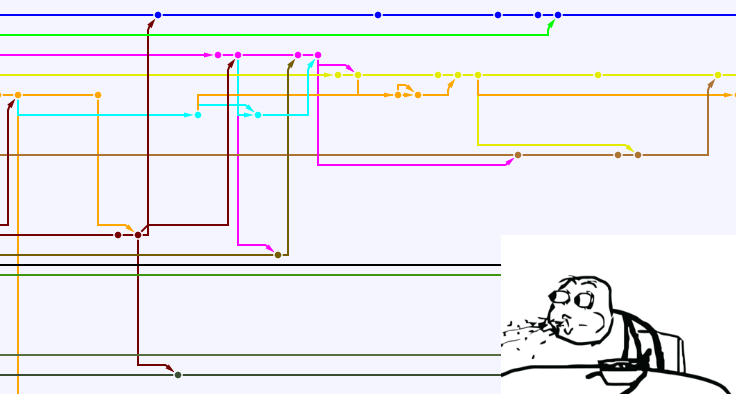
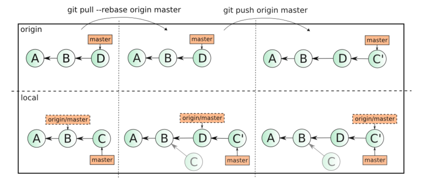
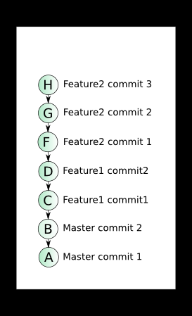
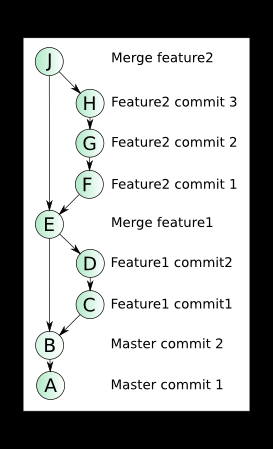

Rebase — один из двух способов объединить изменения, сделанные в одной ветке, с другой веткой. Начинающие и даже опытные пользователи git иногда испытывают нежелание пользоваться ей, так как не видят смысла осваивать еще один способ объединять изменения, когда уже и так прекрасно владеют операцией merge. В этой статье я бы хотел подробно разобрать теорию и практику использования rebase.
Теория
Итак, освежим теоретические знания о том, что же такое rebase. Для начала вкратце — у вас есть две ветки — master и feature, обе локальные, feature была создана от master в состоянии A и содержит в себе коммиты C, D и E. В ветку master после отделения от нее ветки feature был сделан 1 коммит B.

После применения операции rebase master в ветке feature, дерево коммитов будет иметь вид:

Обратите внимание, что коммиты C', D' и E' — не равны C, D и E, они имеют другие хеши, но изменения (дельты), которые они в себе несут, в идеале точно такие же. Отличие в коммитах обусловлено тем, что они имеют другую базу (в первом случае — A, во втором — B), отличия в дельтах, если они есть, обусловлены разрешением конфликтных ситуаций, возникших при rebase. Об этом чуть подробнее далее.
Такое состояние имеет одно важное преимущество перед первым, при слиянии ветки feature в master ветка может быть объединена по fast-forward, что исключает возникновение конфликтов при выполнении этой операции, кроме того, код в ветке feature более актуален, так как учитывает изменения сделанные в ветке master в коммите B.
Процесс rebase-а детально
Давайте теперь разберемся с механикой этого процесса, как именно дерево 1 превратилось в дерево 2?
Напомню, перед rebase вы находтесь в ветке feature, то есть ваш HEAD смотрит на указатель feature, который в свою очередь смотрит на коммит E. Идентификатор ветки master вы передаете в команду как аргумент:
git rebase master
Для начала git находит базовый коммит — общий родитель этих двух состояний. В данном случае это коммит A. Далее двигаясь в направлении вашего текущего HEAD git вычисляет разницу для каждой пары коммитов, на первом шаге между A и С, назовем ее ΔAC. Эта дельта применяется к текущему состоянию ветки master. Если при этом не возникает конфликтное состояние, создается коммит C', таким образом C' = B + ΔAC. Ветки master и feature при этом не смещаются, однако, HEAD перемещается на новый коммит (C'), приводя ваш репозитарий состояние «отделеной головы» (detached HEAD).
Успешно создав коммит C', git переходит к переносу следующих изменений — ΔCD. Предположим, что при наложении этих изменний на коммит C' возник конфликт. Процесс rebase останавливается (именно в этот момент, набрав git status вы можете обнаружить, что находитесь в состоянии detached HEAD). Изменения, внесенные ΔCD находятся в вашей рабочей копии и (кроме конфликтных) подготовлены к коммиту (пунктиром обозначена stage-зона):

Далее вы можете предпринять следующие шаги:
1. Отменить процесс rebase набрав в консоли
git rebase --abort
При этом маркер HEAD, будет перенесен обратно на ветку feature, а уже добавленные коммиты повиснут в воздухе (на них не будет указывать ни один указатель) и будут вскоре удалены.
2. Разрешить конфликт в вашем любимом merge-tool'е, подготовить файлы к коммиту, набрав git add %filename%. Проделав это со всеми конфликтными файлами, продолжить процесс rebase-а набрав в консоли
git rebase --continue
При этом, если все конфликты действительно разрешены, будет создан коммит D' и rebase перейдет к следующему, в данном примере последнему шагу.
3. Если изменения, сделанные при формировании коммита B и коммита D являются полностью взаимоисключающими, причем «правильные» изменения сделаны в коммите B, то вы не сможете продолжить набрав git rebase --continue, так как разрешив конфликты обнаружите, что изменений в рабочей копии нет. В данном случае вам надо пропустить создание коммита D', набрав команду
git rebase --skip
После применения изменений ΔDE будет создан последний коммит E', указатель ветки feature будет установлен на коммит E', а HEAD станет показывать на ветку feature — теперь, вы находитесь в состоянии на втором рисунке, rebase окончен. Старые коммиты C, D и E вам больше не нужны.

При этом коммиты, созданные в процессе rebase-а, будут содержать данные как об оригинальном авторе и дате изменений (Author), так и о пользователе, сделавшем rebase (Commiter):
commit 0244215614ce6886c9e7d75755601f94b8e19729
Author: sloot69 <***@****.com>
AuthorDate: Mon Nov 26 13:19:08 2012 +0400
Commit: Alex <***@****.com>
CommitDate: Mon Nov 26 13:33:27 2012 +0400
С небес на землю — rebase в реальных условиях
На самом деле обычно вы работаете не с двумя ветками, а с четырьмя в самом простом случае: master, origin/master, feature и origin/feature. При этом rebase возможен как между веткой и ее origin-ом, например feature и origin/feature, так и между локальными ветками feature и master.
Rebase ветки с origin-ом
Если вы хотите начать работать с rebase, то лучше всего начать с ребейза своих изменений в ветке относительно ее копии в удаленном репозитарии. Дело в том, что когда вы добавляете коммит, и в удаленном репозитарии добавляется коммит, для объединения изменений по-умолчанию используется merge. Выглядит это примерно так:

Представим умозрительную ситуацию — 3 разработчика активно работают с веткой master в удаленном репозитарии. Делая одновременно комиты на своих машинах они отправляют каждый по 1 изменению в ветку. При этом первый отправляет их без проблем. Второй и третий сталкивается с тем что ветка не может быть отправлена операцией git push origin master, так как в ней уже есть изменения, которые не синхронизированы на локальные машины разработчиков. Оба разработчика (2 и 3) делают git pull origin master, создавая при этом локальные merge-коммиты у себя в репозитарии. Второй делает git push первым. Третий при попытке отправить изменения снова сталкивается с обновлением удаленной ветки и снова делает git pull, создавая еще один merge-коммит. И наконец, третий разработчик делает успешный git push origin master. Если удаленный репозитарий расположен например на github, то network, то есть граф коммитов будет иметь следующий вид:

Три коммита превратились в 6 (базовый коммит не считаем), история изменений неоправдано запутана, информация об объединении локальных веток с удаленными, на мой взгляд, лишняя. Если масштабировать эту ситуацию на несколько тематических веток и большее количество разработчиков, граф может выглядеть, например, так:

Анализ изменений в таком графе неоправданно трудоемкое занятие. Как тут может помочь rebase?
Если вместо git pull origin master выполнить git pull --rebase origin master, то ваши локальные изменения, подобно коммитам C, D и E из первого примера будут перенесены наверх обновленного состояния ветки origin/master, позволяя без создания дополнительных коммитов передать их на удаленный сервер с помощью git push origin master. То есть слияние изменений будет выглядеть уже так:

Как видно, «лишних» merge-коммитов создано не было, ваши изменения в коммите C были использованы для создания коммита C'. Сам же коммит C остался у вас в локальном репозитарии, в удаленный репозитарий был передан только C'. Если все программисты в команде возьмут за правило пользоваться git pull --rebase, тогда каждая из веток в удаленном репозитарии будет выглядеть линейно.
Как поделиться веткой, к которой применен rebase с коллегой
Подробно процесс rebase-а локальной тематической ветки отосительно ветки master был рассмотрен в самом начале статьи. Оговорюсь только, что процесс rebase содержит количество шагов равное количеству коммитов в вашей локальной ветке. Вероятность потенциальных конфликтов, как и в случае с merge, растет пропорционально росту количества коммитов в базовой ветке (master). Поэтому лучше периодически проводить rebase для долгоживущих тематических веток. Но если тематическая ветка имеет свой оригинал на удаленном сервере, как передать ветку в удаленный репозитарий? Если делать push можно только для изменений, которые могут быть приняты по fast-forward, а в данном случае, как мы знаем, это не так:

Тут все просто, наберите в консоли команду:
git push origin feature --force
Force-режим просто копирует отсутствующие родительские коммиты ветки feature на origin и насильно устанавливает указатель ветки на тот же коммит, что и ваш локальный.
Будьте внимательны! Если вы забудете указать идентификатор ветки, то force-push будет выполнен для всех локальных веток, имеющих удаленный оригинал. При этом нужно понимать, что некоторые локальные ветки могут быть в неактуальном состоянии. То есть измененения, которые вы не успели затянуть будут удалены в origin-е. Конечно, сами коммиты не будут удалены — сбросятся только указатели ветки. Эта ситуация поправима — достаточно для каждой ветки найти человека, который последним пушил изменения в нее или уже успел их забрать. Он может сделать обычный push, вновь передав их на origin. Но вся эта морока вам ни к чему, так что лучше просто будьте внимательны.
Ваш коллега, находится в той же ситуации перед pull, в которой вы находились перед тем как сделали push. Только позиции feature и origin/feature отличаются с точностью до наоборот. Если он выполнит обычный git pull origin feature, то произойдет попытка объединения старой и новой ветки с помощью merge. Так как старая и новая ветки содержат одни и те же изменения, то все они будут конфликтными. В данном случае нам снова поможет команда:
git pull --rebase origin feature
Она заберет новую ветку feature и переместит локальные изменения вашего коллеги на ее вершину.
Вообще git pull --rebase origin feature — это безпроигрышный вариант, так как если rebase не требуется, произойдет обычное объединение указателей по fast-forward.
Реинтеграция тематической ветки в master
Мы рассмотрели все необходимые операции для работы с ветками в стиле rebase. Осталось только переключиться в ветку master и сделать git merge feature. Ветка, подготовленная rebase-ом вольется в master по fast-forward, то есть указатель будет просто перемещен вперед.
Однако, у такого подхода есть один недостаток — после merge по fast-forward будет затруднительно определить, какие коммиты были сделаны в вашей ветке, а какие в другой ветке, влитой перед вашей или непосредственно в мастере. Хорошим тоном может быть принятие в вашей команде правила — при интеграции изменений из тематической ветки в основную применять операцию merge с опцией --no-ff. При этом будет создан merge-коммит, одним из родителей которого будет позиция ветки master, другим — позиция ветки feature. Сравните граф коммитов, при объединении веток по fast-forward (слева) и c merge-коммитами, полученными с помощью опции --no-ff (справа):

В данном случае, на мой взгляд, merge-коммиты полезны и несут в себе информацию о моменте объединения веток. Этот граф выглядит как учебный пример, но такая структура вполне реальна при соблюдении некоторых простых правил всеми членами команды.
Заключение
Мы видим, что читаемость графа изменений может быть улучшена на порядок при соблюдении нескольких простых правил, хотя они и требуют небольших дополнительных временных затрат.
В официальном руководстве по git крайне не рекомендуют применять rebase к ветке, которая была запушена в публичный репозитарий, приводятся проблемы, связанные с merge-ем старой ветки, к которой еще не применен rebase (хранящейся у кого-то, кто успел ее загрузить из репозитария) и новой ветки, что приводит к конфликтам и появлению коммитов с одинаковыми датами и сообщениями в логе изменений, здесь мы рассмотрели, как легко можно избежать этой проблемы с помощью git pull --rebase.
В данной статье сделано одно допущение. Все это верно при простой модели ветвления — есть одна главная ветка master и несколько тематических, которые создаются от нее. Когда от тематической ветки создается другая тематическая ветка, есть свои нюансы при rebase-е первичной и вторичной ветки. О них можно прочитать в том самом официальном руководстве.
Иногда споры, что же лучше merge или rebase доходят до холивара. От себя могу сказать, что в конечном счете выбор за вами, однако этот выбор не может быть продиктован уровнем владения тем или иным инструментом. Обоснованный выбор можно сделать, только когда для вас не составит труда работать и в том и в другом стиле. Я не агитирую за повсеместное использование rebase-а, а просто объясняю как им пользоваться. Надеюсь, это статья поможет вам снять вопросы, связанные с механизмом работы rebase и его применением в ежедневной работе.
PS. Хочу поблагодарить своих коллег, продуктивные беседы с которыми позволили мне лучше разобраться в материале, положенном в основу этой статьи.